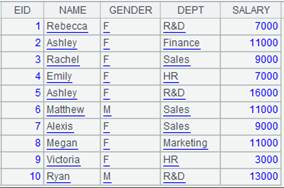
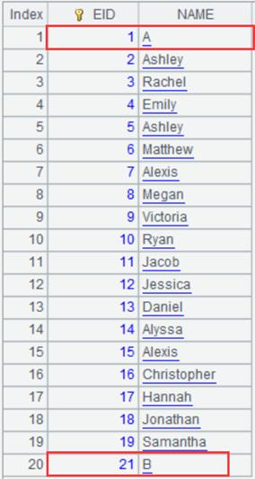
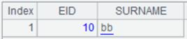
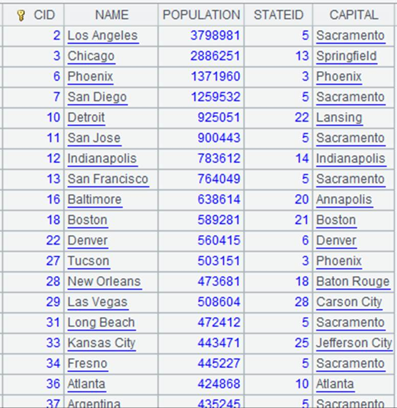
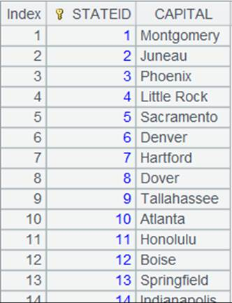
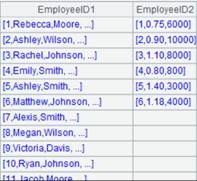
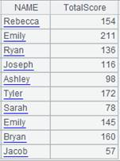
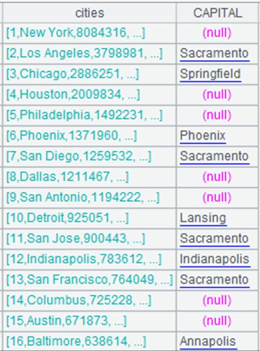
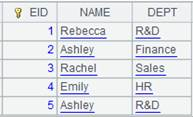

Descripition:
Replace values of specified fields in an in-memory table with the corresponding referencing field values.
Syntax:
T.switch(Fi,Ai:x;¡)
Note:
The function replaces value of Fi field in in-memory table T with counterparts of matching records of in-memory table/table sequence Ai through the latter¡¯s primary key or logical primary key x according to the condition Fi = x. By default, record Fi values are displayed in empty when there are no matching records in Ai.
Parameters:
|
T |
An in-memory table |
|
Fi |
A field of T |
|
Ai |
An in-memory table or a table squence |
|
x |
The (logical) primary key of Ai; if a specific primary is set for Ai, the parameter can be omitted |
Options:
|
@i |
Delete a record from T if its Fi value does not have a match in Ai |
|
@d |
Opposite to @i option, it enables to retain only the non-matching records in T; and in this case, Fi won¡¯t be recorded as null |
|
@1 |
Generate a record of same structure as Ai if the Fi value of a record of T does not have a match in Ai; the primary key of the new record will be Fi |
Example:
When Ai is a table sequence:
|
|
A |
|
|
1 |
=connect("demo").cursor("select EID,NAME,GENDER,DEPT,SALARY from employee where EID<11") |
|
|
2 |
=A1.memory() |
Return an in-memory table  |
|
3 |
=connect("demo").query("SELECT * FROM DEPARTMENT where MANAGER<5").keys(DEPT) |
Return a table sequence with DEPT being the key  |
|
4 |
=A2.switch(DEPT,A3) |
Replace values of DEPT field in A2¡¯s in-memory table with the referencing field values in A3, and display non-matching values as nulls  |
|
5 |
=connect("demo").cursor("select EID,NAME,GENDER,DEPT,SALARY from employee where EID<11").memory() |
Return an in-memory table as A2 does |
|
6 |
=A5.switch@i(DEPT,A3) |
Replace values of DEPT field in A5¡¯s in-memory table with the referencing field values in A3, and with @i option, delete the non-matching records  |
|
7 |
=connect("demo").cursor("select EID,NAME,GENDER,DEPT,SALARY from employee where EID<11").memory() |
Return an in-memory table as A2 does |
|
8 |
=A7.switch@d(DEPT,A3) |
Replace values of DEPT field in A7¡¯s in-memory table with the referencing field values in A3, and with @d option, keep only the non-matching records  |
|
9 |
=connect("demo").cursor("select EID,NAME,GENDER,DEPT,SALARY from employee where EID<11").memory() |
Return an in-memory table as A2 does |
|
10 |
=A9.switch@1(DEPT,A3) |
Replace values of DEPT field in A9¡¯s in-memory table with the referencing field values in A3, and with @1 option, generate a record of A3¡¯s structure when a record does not match any record of A3  |
When Ai is an in-memory table:
|
|
A |
|
|
1 |
=connect("demo").cursor("select EID,NAME,GENDER,DEPT,SALARY from employee where EID>490") |
|
|
2 |
=A1.memory() |
Return an in-memory table  |
|
3 |
=connect("demo").cursor("SELECT * FROM DEPARTMENT") |
|
|
4 |
=A3.memory() |
Return an in-memory table  |
|
5 |
=A2.switch(DEPT,A4:DEPT) |
Replace values of DEPT field in A2¡¯s in-memory table with the referencing field values in A4  |